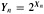
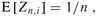
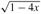
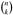

|
|
< Day Day Up > |
|
We have shown that all the basic operations on a binary search tree run in O(h) time, where h is the height of the tree. The height of a binary search tree varies, however, as items are inserted and deleted. If, for example, the items are inserted in strictly increasing order, the tree will be a chain with height n - 1. On the other hand, Exercise B.5-4 shows that h≥ ⌊lg n⌋. As with quicksort, we can show that the behavior of the average case is much closer to the best case than the worst case.
Unfortunately, little is known about the average height of a binary search tree when both insertion and deletion are used to create it. When the tree is created by insertion alone, the analysis becomes more tractable. Let us therefore define a randomly built binary search tree on n keys as one that arises from inserting the keys in random order into an initially empty tree, where each of the n! permutations of the input keys is equally likely. (Exercise 12.4-3 asks you to show that this notion is different from assuming that every binary search tree on n keys is equally likely.) In this section, we shall show that the expected height of a randomly built binary search tree on n keys is O(lg n). We assume that all keys are distinct.
We start by defining three random variables that help measure the height of a randomly built binary search tree. We denote the height of a randomly built binary search on n keys by Xn, and we define the exponential height . When we build a binary search tree on n keys, we choose one key as that of the root, and we let Rn denote the random variable that holds this key's rank within the set of n keys. The value of Rn is equally likely to be any element of the set {1, 2, ..., n}. If Rn = i, then the left subtree of the root is a randomly built binary search tree on i - 1 keys, and the right subtree is a randomly built binary search tree on n - i keys. Because the height of a binary tree is one more than the larger of the heights of the two subtrees of the root, the exponential height of a binary tree is twice the larger of the exponential heights of the two subtrees of the root. If we know that Rn = i, we therefore have that
Yn = 2 · max(Yi-1, Yn-i).
As base cases, we have Y1 = 1, because the exponential height of a tree with 1 node is 20 = 1 and, for convenience, we define Y0 = 0.
Next we define indicator random variables Zn,1, Zn,2, ..., Zn,n, where
Zn,i = I{Rn = i}.
Because Rn is equally likely to be any element of {1, 2, ..., n}, we have that Pr{Rn = i} = 1/n for i = 1,2, ..., n, and hence, by Lemma 5.1,
| (12.1) |  |
for i = 1, 2, ..., n. Because exactly one value of Zn,i is 1 and all others are 0, we also have
We will show that E[Yn] is polynomial in n, which will ultimately imply that E[Xn] = O(lg n).
The indicator random variable Zn,i = I{Rn = i} is independent of the values of Yi-1 and Yn-i. Having chosen Rn = i, the left subtree, whose exponential height is Yi-1, is randomly built on the i - 1 keys whose ranks are less than i. This subtree is just like any other randomly built binary search tree on i - 1 keys. Other than the number of keys it contains, this subtree's structure is not affected at all by the choice of Rn = i; hence the random variables Yi-1 and Zn,i are independent. Likewise, the right subtree, whose exponential height is Yn-i, is randomly built on the n - i keys whose ranks are greater than i. Its structure is independent of the value of Rn, and so the random variables Yn-i and Zn,i are independent. Hence,
Each term E[Y0], E[Y1], ..., E[Yn-1] appears twice in the last summation, once as E[Yi-1] and once as E[Yn-i], and so we have the recurrence
Using the substitution method, we will show that for all positive integers n, the recurrence (12.2) has the solution
In doing so, we will use the identity
(Exercise 12.4-1 asks you to prove this identity.)
For the base case, we verify that the bound
holds. For the substitution, we have that
We have bounded E[Yn], but our ultimate goal is to bound E[Xn]. As Exercise 12.4-4 asks you to show, the function f(x) = 2x is convex (see page 1109). Therefore, we can apply Jensen's inequality (C.25), which says that
to derive that
Taking logarithms of both sides gives E[Xn] = O(lg n). Thus, we have proven the following:
The expected height of a randomly built binary search tree on n keys is O(lg n).
Describe a binary search tree on n nodes such that the average depth of a node in the tree is Θ(lg n) but the height of the tree is w(lg n). Give an asymptotic upper bound on the height of an n-node binary search tree in which the average depth of a node is Θ(lg n).
Show that the notion of a randomly chosen binary search tree on n keys, where each binary search tree of n keys is equally likely to be chosen, is different from the notion of a randomly built binary search tree given in this section. (Hint: List the possibilities when n = 3.)
Consider RANDOMIZED-QUICKSORT operating on a sequence of n input numbers. Prove that for any constant k > 0, all but O(1/nk) of the n! input permutations yield an O(n lg n) running time.
Equal keys pose a problem for the implementation of binary search trees.
What is the asymptotic performance of TREE-INSERT when used to insert n items with identical keys into an initially empty binary search tree?
We propose to improve TREE-INSERT by testing before line 5 whether or not key[z] = key[x] and by testing before line 11 whether or not key[z] = key[y].If equality holds, we implement one of the following strategies. For each strategy, find the asymptotic performance of inserting n items with identical keys into an initially empty binary search tree. (The strategies are described for line 5, in which we compare the keys of z and x. Substitute y for x to arrive at the strategies for line 11.)
Keep a boolean flag b[x] at node x, and set x to either left[x] or right[x] based on the value of b[x], which alternates between FALSE and TRUE each time x is visited during insertion of a node with the same key as x.
Keep a list of nodes with equal keys at x, and insert z into the list.
Randomly set x to either left[x] or right[x]. (Give the worst-case performance
and informally derive the average-case performance.)
Given two strings a = a0a1...ap and b = b0b1...bq, where each ai and each bj is in some ordered set of characters, we say that string a is lexicographically less than string b if either
there exists an integer j, where 0 ≤ j ≤ min(p, q), such that ai = bi for all i = 0, 1, ..., j - 1 and aj < bj, or
p < q and ai = bi for all i = 0, 1, ..., p.
For example, if a and b are bit strings, then 10100 < 10110 by rule 1 (letting j = 3) and 10100 < 101000 by rule 2. This is similar to the ordering used in English-language dictionaries.
The radix tree data structure shown in Figure 12.5 stores the bit strings 1011, 10, 011, 100, and 0. When searching for a key a = a0a1...ap, we go left at a node of depth i if ai = 0 and right if ai = 1. Let S be a set of distinct binary strings whose lengths sum to n. Show how to use a radix tree to sort S lexicographically in Θ(n) time. For the example in Figure 12.5, the output of the sort should be the sequence 0, 011, 10, 100, 1011.
In this problem, we prove that the average depth of a node in a randomly built binary search tree with n nodes is O(lg n). Although this result is weaker than that of Theorem 12.4, the technique we shall use reveals a surprising similarity between the building of a binary search tree and the running of RANDOMIZED-QUICKSORT from Section 7.3.
We define the total path length P(T) of a binary tree T as the sum, over all nodes x in T , of the depth of node x, which we denote by d(x, T).
Argue that the average depth of a node in T is
Thus, we wish to show that the expected value of P(T) is O(n lg n).
Let TL and TR denote the left and right subtrees of tree T, respectively. Argue that if T has n nodes, then
P(T) = P(TL) + P(TR) + n - 1.
Let P(n) denote the average total path length of a randomly built binary search tree with n nodes. Show that
Show that P(n) can be rewritten as
Recalling the alternative analysis of the randomized version of quicksort given in Problem 7-2, conclude that P(n) = O(n lg n).
At each recursive invocation of quicksort, we choose a random pivot element to partition the set of elements being sorted. Each node of a binary search tree partitions the set of elements that fall into the subtree rooted at that node.
Describe an implementation of quicksort in which the comparisons to sort a set of elements are exactly the same as the comparisons to insert the elements into a binary search tree. (The order in which comparisons are made may differ, but the same comparisons must be made.)
Let bn denote the number of different binary trees with n nodes. In this problem, you will find a formula for bn, as well as an asymptotic estimate.
Show that b0 = 1 and that, for n ≥ 1,
Referring to Problem 4-5 for the definition of a generating function, let B(x) be the generating function
Show that B(x) = xB(x)2 + 1, and hence one way to express B(x) in closed form is
The Taylor expansion of f(x) around the point x = a is given by
where f(k)(x) is the kth derivative of f evaluated at x.
Show that
(the nth Catalan number) by using the Taylor expansion of  around x = 0. (If you wish, instead of using the Taylor expansion, you may use the generalization of the binomial expansion (C.4) to nonintegral exponents n, where for any real number n and for any integer k, we interpret  to be n(n - 1) (n - k + 1)/k! if k ≥ 0, and 0 otherwise.)
Show that
|
|
< Day Day Up > |
|